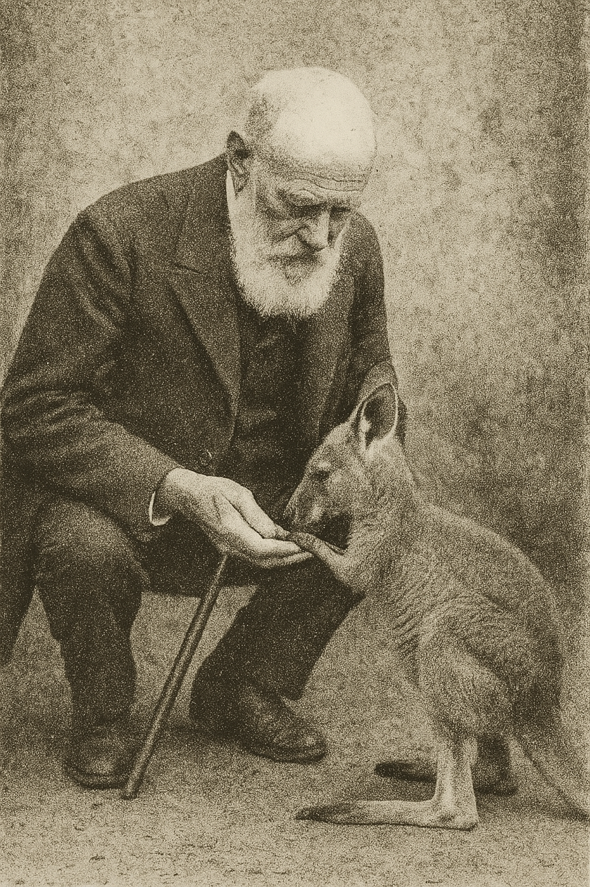
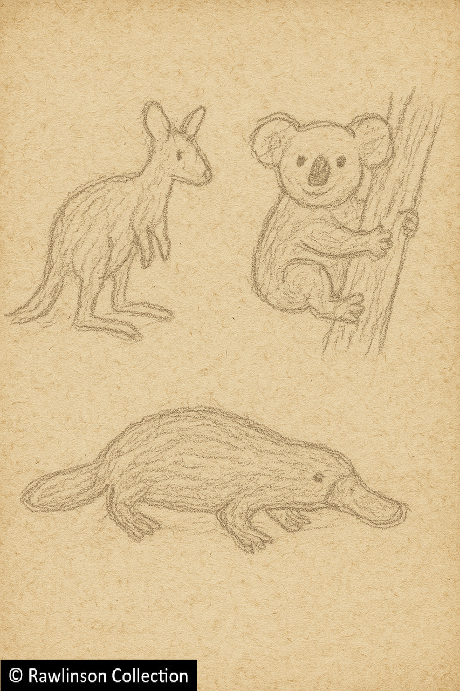

1890s: Elder Statesman
The Lion in Winter

Sir Stanley, c. 1892
As the new decade dawned, Sir Stanley Trafalgar Rawlinson approached his seventy-sixth year with undimmed vitality. Where others of his age might have retreated to their libraries and warmed themselves by the embers of former glories, Stanley remained defiantly restless. The nineteenth century was growing old — yet he refused to grow old with it. His pen, as ever, was busy; his opinions, as ever, unrestrained; his curiosity, as boundless as in his youth. Letters from the period suggest that even in his twilight years, he continued to travel widely across Europe, to engage in the affairs of the Empire, and to dispatch his views to editors and ministers alike, often uninvited and rarely unprinted.
A Voyage Too Far: The Australian Odyssey (1892–93)

Sir Stanley in Australia"
In 1892, Stanley embarked upon what he described as "another epic journey" — this time bound for Australia. The voyage was arduous even for the young and strong, and for a man in his late seventies, it was little short of heroic. His route carried him via Port Said, Aden, and Colombo, where the equatorial heat proved almost too much. His letters from the period record a typically vivid combination of suffering and humour:
"One of the most unbearable of my protracted life… by the time I reached Colombo, I swear I had expelled enough from both ends that the ship required to take on three automobiles as additional ballast!"

Sir Stanley's sketches
Arriving at last in Sydney, he was received with much ceremony by the Governor of New South Wales and housed at Government House. There followed several months of touring: New South Wales, Victoria, Tasmania, South Australia, and Queensland each fell under his observant gaze and, occasionally, his withering pen. His notebooks from this period include earnest sketches of kangaroos and wombats ("roughly rendered, but full of character"), and affectionate if contradictory remarks about the settlers — "rusticly charming" on one page, "frustratingly boorish" on another.
The Archduke and the Rogue (1893–94)

Letter from Franz Ferdinand, 1894
Fate, ever fond of theatrical pairings, arranged for Stanley to meet one of Europe's most intriguing young royals during this Australian sojourn.
In May 1893, Archduke Franz Ferdinand of Austria–Hungary arrived in Sydney on a world tour — nominally to broaden his education, but in practice to indulge his fondness for hunting. The two men met at a reception aboard the Archduke's ship.
"…[his] reputation for moral earnestness and impatience is but a thin veneer. After we were introduced, and he was made aware that I am a Teutophone, he immediately warmed up. He does, it turns out, find our hosts to be endearingly risible Jobbernowls, as do I. He intends to spend much of his time here bravely massacring the local herbivorous fauna with a high-powered rifle, which I find rather distasteful, but otherwise we got along famously."
Despite their age difference, the pair became improbable companions for the next eleven days, touring eastern Australia while the Archduke shot almost anything that moved — including, Stanley observed darkly, "targets both animal and tragically human." When Franz Ferdinand sailed on into the Pacific, Stanley began the long return to England, arriving home in July 1894, considerably the wiser and rather more weary.
Bohemian Rhapsody: Prague, 1894
Barely home, he turned his eyes once more to the Continent. By late summer 1894, Stanley and his wife Maryka were in Prague — and, perhaps not coincidentally, so was Franz Ferdinand, then stationed with his regiment. The pair were soon inseparable. They were seen together at Halbturn Castle, residence of Archduke Friedrich, whose family entertained hopes of marrying Franz Ferdinand to his cousin, Archduchess Marie Christine.
History, however, took another course. The Archduke was in fact courting Marie's lady-in-waiting, Sophie Chotek, and Stanley was enlisted, knowingly or otherwise, in the intrigue. In a letter written shortly afterward, Franz Ferdinand expressed his gratitude in typically candid terms:
"You have earned the enduring gratitude of Sophie and myself for helping in the subterfuge that has allowed us to conduct our courtship absent the ever-present and watchful eyes of the Imperial family… My cousin Frederick's jocular ribaldry towards you when he thought that you were courting Sophie and not I, will live with me forever. Judging by the smile on Marie's face, she found your company little hardship. You really are a remarkable old rogue, Sir Stanley."
What Maryka made of all this is unrecorded, though given her own reputation for tolerance and amusement, she was likely no less entertained than the Archduchess herself.
The Empire Writes Back: The South African Question (1895)

Letter to The Times on South Africa, 1895
Stanley's next burst of indignation came from across the seas once again — this time from South Africa. In December 1895, news of the failed Jameson Raid provoked from him one of his most blistering letters to The Times. The incident — a reckless attempt by forces loyal to Cecil Rhodes to foment rebellion in the Boer Republic — struck at all his principles of duty, honour, and statesmanship.
"The international reputation of our Empire among our contemporaries is founded in equal measure on strength of force, moral superiority and gnawing jealousy. What this foozler Jameson and his lobcock patron have managed to do is to relinquish all three in one fell swoop."
He did not stop there. He accused Joseph Chamberlain, the Colonial Secretary, of knowing more than he cared to admit — "a hornswoggler of the first order" — thus beginning a feud that would last until both men's deaths, only days apart.
A Matter of Justice: The Dreyfus Affair (1896–98)

Letter from Rachel Beer (The Observer), 1898
Of all the episodes in Stanley's later life, none is more tantalising than his shadowy role in the Dreyfus Affair. This complex saga revolved around the arrest and imprisonment in 1894 of Jewish French Artillery officer Alfred Dreyfus on espionage charges. After Dreyfus served two years on in a penal colony on Devil's Island, new evidence was brought to light that revealed another officer, Maj. Ferdinand Esterhazy to have been the guilty party. Diego to antisemitic sentiment however, senior officials ensured his acquittal and laid further charges on Dreyfus.
Officially, Stanley was a mere observer; privately, correspondence from his papers tells another story.
A letter from Lt. Col. Georges Picquart, dated April 1896, thanks Stanley for having "cast the light to illuminate our way" and for his "unerring eye in handwriting comparison" — suggesting that Stanley may have helped decipher the clue that first exposed Major Esterhazy as the true traitor. "We are united," Picquart wrote, "in our desire that the scourge of bigotry, prejudice, and persecution not be allowed to prevail."
Two years later, in 1898, The Observer's formidable editor Rachel Beer wrote to thank him for persuading Esterhazy — then hiding in England — to grant the interviews that ultimately forced his confession. Whether Stanley sought recognition for this intervention is doubtful; as ever, his reward was in the cause itself.
Home Truths: Ireland and Reform

Punch article, 1896
Throughout the long debate over Irish Home Rule, Stanley remained a steadfast — and occasionally sardonic — commentator. Following the defeat of Gladstone's 1893 Bill, he contributed an essay to Punch (1896), lamenting the government's indifference:
"…this is more than just a debate about potatoes and black beer. It is not about whose head appears on whose banknotes, as some on the government benches would have us believe. It is about justice. It is about constitutional reform. It is about the security of the Empire. It is about allowing a populace to have a say in how they are governed, and by whom — for as long as they are sober enough to do so!"
He was equally active in the broader social debates of the decade: the 1891 Education Act, the poverty surveys of Booth and Rowntree, the tightening of labour laws, and the early stirrings of women's suffrage. To each he brought his pen and his conviction — sometimes infuriating, always eloquent.
Splendid Isolation, or the Perils of Dining Alone

Letter to The Times, 1897
By the late 1890s, Stanley's greatest anxiety was the drift of British foreign policy toward what contemporaries called "Splendid Isolation." He argued, in the pages of The Times and in Parliament alike, that disengagement was a luxury no great power could afford:
"Is this the moment to cultivate solitude? I venture that diplomacy, not detachment, is the true mark of civilisation. A frank understanding with France, a sensible conversation with Germany, even a civil nod to the Americans — these would serve us better than the proud mutterings of a nation determined to dine alone."
Even as he defended the Empire's achievements, he had begun to question its moral cost — its appetite for expansion, its indifference to consequence.
The Closing Act
As the century drew to a close, Sir Stanley approached his eighty-sixth birthday with the same restless intellect and caustic wit that had carried him through seven decades of empire, adventure, and controversy. His critics wished him to retire; his admirers knew he never would. The old lion still roared — and though the twilight was lengthening, his voice would echo yet a little longer across the dying years of Queen Victoria's reign.